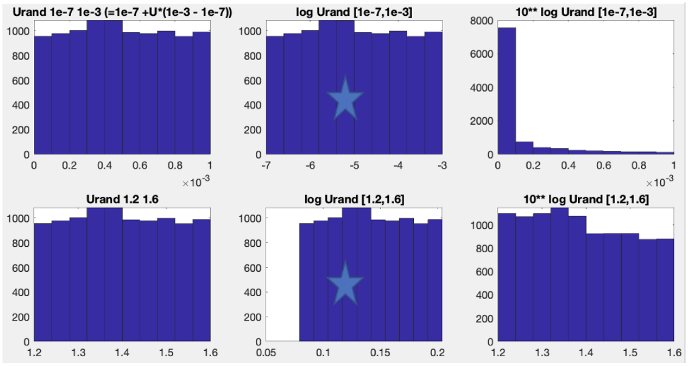

CARDAMOM community collaborative manual
###THIS IS THE CARDAMOM TEAM INTERNAL MANUAL (MANUAL_DEV.md). Use this mannual collaboratively with CARDAMOM team. As & when instructions are ready to be used in public CARDAMOM code, copy/transfer/adapt these manually into MANUAL.md
Test .md link to other file README file
Example relative link for subsection GETTING STARTED
Anthony Bloom, Gregory R Quetin, Victoria Meyer, Paul Levine, Shuang Ma, Renato Braghiere and others
[If you’re making any edits, add your name here!]
Ad-hoc material to “file” away in manual contents
Fill value conventions: Nans and -9999
DOM = all dead organic C states, SOM = only DALEC soil
Sections for partitioned manual “Curator” (or cognizant engineer) = you’re in charge of (i) starting a new markdown page and moving content there, and (2) getting other ppl to contribute content where necessary.
Also: link at end of each section to get to next section (e.g. previous, next, and “back to summary”, definitely include that in all files).
(1) Summary (Greg) (2) Getting started (Jessie; probably need to make new pages for DEMO) (3) Running CARDAMOM (Paul = main section, and command line example; expect subsections for matlab and python) (4) Reading, using and analyzing CARDAMOM data? (Greg)
Cost function (Anthony; with as much as possible review from others).
The “cbf.nc” (Matt)
CARDAMOM C developer guide (Shuang)
Running CARDAMOM in parallel (Sarah, scope = examples or resources associated to parallel computing option)
CARDAMOM-MAPS (point to CARDAMOM-MAPS manual)
FAQ etc (Anthony)
Table of Contents
-
Step 1: CARDAMOM_MDF
Step 2: CARDAMOM_RUN_MODEL
Saving output at runtime (Matlab)
[CARDAMOM state and flux conventions]
CARDAMOM cost function *Options
The “.cbf.nc” File (CARDAMOM netcdf input files)
cbf.nc Fields
-
[Intro tips]
[Make a new model]
[Add more parameters to the model]
[Add more pools to the model]
[Define prior range for parameters and why log transformed prior range is used]
[Add a new dataset to CARDAMOM DATA structure]
[Make a new cost function]
[Switches for EDCs]
“Frequently asked questions” and “frequently encountered issues & solutions”
[Frequently asked questions (FAQs)]
[Frequently encountered issues & solutions (FEIs…?)]
Troubleshooting CARDAMOM runs: “my CARDAMOM run doesn’t work”
Getting Started with CARDAMOM
“Installing” CARDAMOM
Get code from Github
Get invite from CARDAMOM team to join https://github.com/CARDAMOM-framework
Go to https://github.com/CARDAMOM-framework/CARDAMOM_2.1.6c
Click on green “Code” button, and select git clone with ssh
Example
Step 1. type “cd /Users/[yourusername]/”, in your mac terminal, for example (or alternatively go to the preffered directory for storing CARDAMOM code).
Step 2. type “git clone https://github.com/CARDAMOM-framework/CARDAMOM_2.1.6c” mac terminal.
See Git Clone FAQ below for troubleshooting
Do not use .zip approach (!) unless you only intend to download code once, and do not anticipate collaborating with team.
git clone FAQ
Get fatal error when typing “git clone https://github.com/CARDAMOM-framework/CARDAMOM_2.1.6c”, what should I do?
(NOTE: make link to CARDAMOM GITHUB.md, Shuang’s user guide).
SOON TO BE REQUIRED:
Install homebrew (if you don’t already have it) (https://brew.sh/)[DETAILS AS NEEDED]
Install netcdf library (if you don’t already have it)
*type “brew install netcdf” in terminal window (Mac), see step (1) for installing brew. *
Anthony, Alex: setenv(‘CARDAMOM_NC_CONFIG_PATH’,’/usr/local/bin/nc-config’)
For PC: no supported solution yet… (Paul: add potential windows solution)
Demos below will compile CARDAMOM and run short assimilation runs and forward runs for testing. There are options in both Python and Matlab. Check Appendix for additional tools written in Matlab and Python.
CARDAMOM Github User Must Read
After you clone the CARDAMOM repository to your local, please take a minute to go through the first section in CARDAMOM_GIT_MUST_READ.md. We recommand all users to follow the instructions in order to effectively maintain the CARDAMOM github environment.
CARDAMOM Matlab Demo and Setup Test
Follow these steps once. Once you’ve successfully made it to step 4, you can then start matlab and you’re ready to use all CARDAMOM routines without any further action. Note: PC implementation not supported (but do add notes if you’ve managed to do this!).
What happens when you run CARDAMOM_DEMO:
CARDAMOM_DEMO.m will locally compile the CARDAMOM C code (using “gcc” C compiler). CARDAMOM (called from within matlab) will then show some attempts to find a starting point with probability > 0, and will then start accepting/rejecting parameter samples (note: this is a shorter-than-usual run only for demo purposes). The CARDAMOM_DEMO script will then make a figure with some of the retrieved parameter results. Completion of the CARDAMOM script means all components of CARDAMOM are operational.
Notes: + This works great on macs and (theoretically) on linux. I have no idea what happens on Windows. + Please report questions and issues encountered in FAQ & FEI section below + Works with Matlab 2017b and later versions. Compatibility with earlier versions is likely straightforward.
Run Matlab Demo
Start matlab
Set CARDAMOM environmental variables in matlab
To do this:
Create or edit existing matlab startup.m file: e.g. type “edit startup.m” in matlab command window to edit new or existing startup file.
Copy lines from CARDAMOM_2.1.6c/MATLAB/startup_template.m into startup.m file, and adapt as instructed in startup_template.m comments.
Save changes to startup.m
Make a directory called “DUMPFILES” by typing “mkdir DUMPFILES” in matlab command window OR type “mkdir DUMFILES” in terminal console (in which case, ensure you are in the desired working directory where startup.m is).
Tips:
Type “pwd” right after starting matlab to find out current working directory
paths in “startup.m” should either be absolute paths, or relative to current working directory
to avoid github issues, either:
the current working directory needs to be outside the “CARDAMOM” folder, or equivalent github cloned folder (recommended)
(b) make a “.gitignore” file and ensure github ignores all user-made files within the “CARDAMOM_2.1.6c” folder.
Quit & restart matlab
Type “which startup” in matlab command window
check matlab is pointing at correct startup.m file
In case you encounter issues, more info here (https://www.mathworks.com/help/matlab/ref/startup.html)
Run CARDAMOM_DEMO.
This is a test script to ensure all works well. If you get to the end of the demo script, then you’ve got full CARDAMOM functionality!
Type “CARDAMOM_DEMO” in matlab command window
CARDAMOM Python Demo and Setup
Compile code from Github
Use a C compiler to comple the assimilation (CARDAMOM_MDF.exe) and forward run (CARDAMOM_RUN_MODEL.exe) functions. For example:
gcc -std=c99 CARDAMOM/C/projects/CARDAMOM_MDF/CARDAMOM_MDF.c -o CARDAMOM/C/projects/CARDAMOM_MDF/CARDAMOM_MDF.exe -lm
gcc -std=c99 CARDAMOM/C/projects/CARDAMOM_GENERAL/CARDAMOM_RUN_MODEL.c -o CARDAMOM/C/projects/CARDAMOM_GENERAL/CARDAMOM_RUN_MODEL.exe -lm
Tutorials
Summary of tools to interact with CARDAMOM using python. Read and write of binary files. Conversion of outputs (parameters, pools, fluxes) to netcdf. Additional functionality in summarizing point runs into a netcdf map of results.
See tutorials (PYTHON/tutorials)
Tutorial 1: Description of input file (.cbf) and how to open/view file. Open and view parameter output from assimilation runs (.cbr). Open and view pools/fluxes from forward run (.bin).
Tutorial 2: This tutorial will show the basic set up to run a CARDAMOM assimilation and forward run from the command line. This is set up for mac/linux.\
Basic Steps:
Download/git-clone a copy of CARDAMOM
Compile the c-code of CARDAMOM (make sure to do this after any changes)
Run compiled file for assimilation with a pointer towards the input (.cbf) and parameters (.cbr) locations.
With a parameters file, run a compiled file for a forward run to retrieve the outputs of your parameter ensemble. Point required for outputs (.bin).
Common practice is to organize input, parameter and output files in: topfolder/cbf/.cbf topfolder/cbr/.cbr topfolder/output/*.bin
Running CARDAMOM
This section outlines setting up CARDAMOM runs now that it is downloaded and tested (see above). The first example will be CARDAMOM run from the command line, followed by descriptions of CARDAMOM wrappers - written in both Matlab and Python. Code availability and description across platforms is on a case-by-case basis. We assume (and maybe eventually strive for?) all function names are preserved across matlab/python/other platforms.
Running CARDAMOM consists of running an assimilation where CARDAMOM is fed drivers (for the model chosen) and observations (to form constraints with the cost function) throught the .cbf file and iterates through the MCMC to produce a set of optimized parameters (the .cbr file output). These inputs and parameters are then combined in a final forward run to produce output files (.bin files) for fluxes, pools, edc states, and probabilities. Depicted in Figure below.
 Figure: Diagram of the basic CARDAMOM run modes.
Figure: Diagram of the basic CARDAMOM run modes.
To test for convergence between multiple runs started from random sets of parameters (chains), the Gelman-Rubin convergence criterion is often used.
Gelman-Rubin convergence criterion Convergence across all parameters is considered adequate for a Gelman-Rubin convergence criterion of <1.2 or <1.1 across all parameter histograms.
Step 1: CARDAMOM_MDF
Example commandline submission of CARDAMOM assimilation run
These are the assimilation runs for CARDAMOM where repeated iterations optimize the models parameters through MCMC.
/<cardamomfolder>/CARDAMOM/C/projects/CARDAMOM_MDF/CARDAMOM_MDF.exe /<outputfolder>/cbf/<cbffilename>.cbf /<outputfolder>/cbr/<cbrfilename>.cbr 100000 0 200 0.001 119 1000
for Matlab Users
CBR = CARDAMOM_RUN_MDF(CBF,MCO)
Here’s an example matlab code for (a) running multiple chains, and (b) testing convergence between chains.
MCO.niterations=1e7;
for n=1:3;CBR(n)=CARDAMOM_RUN_MDF(CBF,MCO);end\
CBR=cardamomfun_combine_parameter_chains(CBR);\
[gr]=cardamomfun_convergence_tests(CBF,CBR,[1,1,1])\
for Python Users
see Tutorial 2 above
Recommended MCMC configurations
Sample 10^5 iterations (MCO.niterations=1e5;) for code testing purposes (e.g. CARDAMOM_DEMO)
Sample 10^7 iterations (MCO.niterations=1e7;) for exploratory runs
Sample 10^8 iterations (MCO.niterations=1e8;) for final (e.g. publication) runs.
Step 2: CARDAMOM_RUN_MODEL
This is the forward run using optimized parameters and saving out the pools and fluxes.
/<cardamomfolder>/CARDAMOM/C/projects/CARDAMOM_GENERAL/CARDAMOM_RUN_MODEL.exe /<outputfolder>/cbf/<cbffilename>.cbf /<outputfolder>/cbr/<cbrfilename>.cbr /<outputfolder>/output/fluxfile_<filename>.bin /<outputfolder>/output/poolfile_<filename>.bin /<outputfolder>/output/edcdfile_<filename>.bin /<outputfolder>/output/probfile_<filename>.bin
Saving output at runtime (Matlab)
To have CARDAMOM_RUN_MODEL routine save full output at runtime (to avoid having to run model again for post processing):
Opt. 1 (recommendeds): To save output corresponding to PXI project,
Use CARDAMOM_PROJECT_OUTPUTS_beta.m
This function stores output by default\
Opt. 2 (prob not worth it for a handful of cbf files): To save output corresponding to cbf file, use\
[CBR,CBF]=CARDAMOM_RUN_MODEL(cbffilename,PARS,OPT);
Set OPT.STORE=1 (see “CARDAMOM_RUN_MODEL.m”) for instruction
Make sure to pass string or cell for cbffilename.\
CARDAMOM state and flux conventions
Initial conditions correspond to pools (states) at first timestep t = 0
Model Meteorological forcing at timestep t is centered between pools (states) t and t+1
Model fluxes at timestep t also centered between states t and t +1

In CARDAMOM C code See conventions above
For Matlab users CARDAMOM_RUN_MODEL.m throws out first one, but only because it’s repeat of initial conditions (which are contained in parameter vector).
The “cbf.nc” file (CARDAMOM binary input file)
Note: Binary cbf has been replaced by the netcdf format\
The CBF file contains information on the model’s driving meterology (see Appendix: Standard Inputs) and the observations for constraining the model. In addition, the CBF file contains additional information on what model ID to run, uncertainties of observations, parameter priors and uncertainties, and which EDCs to have on. The driving meteorology is often taken from site level measurements or global reanalysis. See Appendix: Data used in CARDAMOM for datasets used priviously in CARDAMOM.
.cbf.nc Fields
Example file provided in “DATA/CARDAMOM_DEMO_DRIVERS_prototype.cbf.nc”
Example Meteorological fields, see Appendix: Standard Inputs for variables and units
Time [Days since Jan 01, 2001]
min temp [C]
max temp [C]
Solar irradiance [MJ/m2/day]
CO2
Day of year
Burned area [m2/m2]
VPD [hPa]
Precip. [mm/day]\
MCMCID fields
MCMCID is a .cbf.nc dataset (see “DATA/CARDAMOM_DEMO_DRIVERS_prototype.cbf.nc”)
The MCMCID value determines the MCMC algorith to be used in CARDAMOM. Currently supported options are:
MCMCID = 119: Adaptive Metropolis-Hastings Markov Chain Monte Carlo (Haario et al., 2001)
MCMCID = 3: Assymetric Burn-in Differential evolution MCMC (in prep).
See below for attributes
Default MCMCID value is 119
nITERATIONS attribute (default = 10000)
This determines the number of MCMC iterations (required by both algorithms).
Default value is for testing purposes only. See individual MCMCID recommendations for full simulation configurations.
Recommend choosing a value which is a multiple of “nSAMPLES” attribute
nPRINT attribute (default = 1000)
This at determines the MCMC status printout frequency.
An integer value N means the MCMC status will be printed every N iterations.
A value of “0” will switch off status printouts.
nSAMPLES attribute (default = 2000)
This determines number of samples to be output after MCMC completion
This number must be greater or equal to nITERATIONS
These samples include the MCMC burn-in phase
We recommend ensuring nITERATIONS is a multiple of nSAMPLES.
Make new CBF File
Make a new CBF file (Matlab)
Copy an existing CBF structure (CBF=CBFtemplate), OR load an existing file e.g. CBF=CARDAMOM_READ_BINARY_FILEFORMAT(‘cbffile.cbf’));
clear observations CBF=cardamomfun_clear_cbf_obs(CBF);
Replace all CBF.MET with new MET datasets.
Add zeros if there are no fires.
Set “CBF.LAT” to equal local latitude (in degrees).
Add observations from new locations. Use -9999 for any missing observations in CBF.OBS. fields.
Warning! Regularly encountered issues
use cardamom_vvuq_cbf_summary(CBF), and check all observations included in CBF file. Often some get left over from previous runs (oops!). In particular, check “CBF.OTHER_OBS” and CBF.PARPRIORS to make sure nothing “unexpected” is there (this also shows up when using cardamom_vvuq_cbf_summary(CBF).
Make a new CBF file (Python)
See Tutorial 2 for structure, replace fields in dictionary with new meteorology and observations.
CARDAMOM C developer guide
Intro tips.
Before doing any of the following, either git branch and/or backup your C code (!!!).
Regularly & frequently compile (e.g. CARDAMOM_COMPILE) when making any changes.\
Make a new model.
Making a new model ID in CARDAMOM (e.g. ID=830), based on original model (e.g. ID=811). To do this:
Open C/projects/CARDAMOM_GENERAL/CARDAMOM_MODEL_LIBRARY.c and create new model identification information (e.g. ID = 830).
make folder in projects/CARDAMOM_MODELS/DALEC/DALEC_830 (if copied, open all files in folder and rename all instances of e.g. ”811” to “830”).
Tips for step 2.
copy every instance of DALEC_811 and name them DALEC_830.
Compile C code to check if it compiles.
(Matlab) You can use “CARDAMOM_COMPILE” in matlab, to see if the code compiles OK.
if the above works without issue, then you should be able to change a CBF.ID value to CBF.ID=830 and the model will run (e.g. with CARDAMOM_RUN_MODEL) without issue!
Once you’ve successfully replicated CBF.ID=811 to CBF.ID=830, you can then make model structure changes in DALEC_830.c
Keep using “CARDAMOM_COMPILE” every so often (in matlab, and equivalent function elsewhere) to see if your new code compiles OK.
For matlab users
Open CARDAMOM_RUN_MODEL.m and add the new model ID to the appropriate “if” statement (e.g. if CBF.ID==1000 || CBF.ID==1001;).
Add more parameters to the model.
update this section with instructions for parameter index abstraction
In the folder titled C/projects/CARDAMOM_MODELS/DALEC/DALEC_
, open MODEL_INFO_ .c, and change “DALECmodel.nopars” (e.g. from “33” to “35”) Open PARS_INFO_
.c and add two extra entries at the bottom of the code (with minimum and maximum values). Note: CARDAMOM only supports positive-definite values, if a -ve to +ve range is required, use “exp()” function for -ve to +ve value ranges, and use “log()” to transform these back within DALEC_ .c model. For matlab users. Run this line in the matlab command window after making any changes to the number of parameters or pools in MODEL_INFO_
.c
MD=CARDAMOM_MODEL_LIBRARY(<newmodelid>,[],1);
(where
Add more pools to the model
In the folder titled C/projects/CARDAMOM_MODELS/DALEC/DALEC_
, open MODEL_INFO_ .c, and change “DALECmodel.nopools” (e.g. from “8” to “9”) To optimize the pool initial conditions along with other parameters, add an extra parameter to the model. Follow instructions in “Add more parameters to the model” section to do this.
FOR MATLAB USERS. Run this line in the matlab command window after making any changes to the number of parameters or pools in MODEL_INFO_
.c:
“MD=CARDAMOM_MODEL_LIBRARY(
(where
Adapt EDC2_
.c to either (a) run EDC checks on new pools or
(b) limit EDC checks to previously existing pools only (check for instances where “nopools” variable is used in loops). This is (unfortunately) a less-than-elegant approach, and we’re working on a comprehensive solution in the long run.
Define prior range for parameters and why log transformed prior range is used
Avoid using zero as either the minimum or maximum parameter values, as log transformation is used for creating the new parameter values so that there is equal chance being selected within the same magnitude. Log transformation is essential for parameters spanning several magnitudes, like Soil Organic Carbon turnover rate, while doesn’t make a big difference for parameters like Q10;
Two examples make it easier to understand:
Soil organic C turnover rate (1e-7 to 1e-3 gC yr-1)
Temperature sensitivity (Q10, 1.2 to 1.6)
For soil organic c turnover rate, we want equal possibilities for values spanning 1e-7 to 1e-6, 1e-6 to 1e-5,1e-5 to 1e-4, and 1e-4 to 1e-3, instead of equal chances for values spanning 10e-7 to 0.11e-3, 0.11e-3 to 0.21e-3, 0.21e-3 to 0.31e-3, … 0.91e-3 to 1* 1e-3.
Left figures are showing the uniform space distributions; Middle figures are showing the log uniform space distributions, which is used in CARDAMOM MCMC; Right figures are showing the actual uniform space distributions in order to get the middle distribution;

Add a new dataset to CARDAMOM DATA structure
Example: NBE uncertainty, CH4, etc.
Files that are Modified:
CARDAMOM read/writer Matlab/ Python (e.g. add to list of obsnames in “CBFOBS=compile_cbf_obs_fields(CBF)”)
CARDAMOM_WRITE_BINARY_FILEFORMAT.m; CARDAMOM_READ_BINARY_FILEFORMAT.m
CARDAMOM_DATA_STRUCTURE.c
CARDAMOM_READ_BINARY_DATA.c
To add changes, can simply search for term ‘CH4’ to find all the spots you need to add your new term
Add observation variable name to CARDAMOM_DATA_STRUCTURE.c (e.g. follow “GPP” entry as example)
Add number of indices and number of none zero obs (again, follow GPP example throughout code)
Add to CARDAMOM_READ_BINARY_DATA.c
Initialize data structure, top of file
~L:150; initialize field: e.g. if (DATA->NEEunc==0){DATA->NEEunc=calloc(DATA->nodays,sizeof(double));}
~L:210; add line by line reading of observations
Located in the binary file by the order of observations
~L:266; if (DATA->noobs>11){c=0;for (n=0;n
nodays;n++){if (DATA->NEEunc[n]>-9998){DATA->neeuncpts[c]=n;c=c+1;}}} Free the point of the structure ~L:350
~L:360, free the structure (avoid segmentation fault)
Add to CARDAMOM_WRITE_BINARY_FILEFORMAT.m
Data is available in the data structure for use in Likelihood etc.
Optional: add new cost function module (e.g. DATA_LIKELIHOOD_CH4.c) to use
To do this, add cost function module call in CARDAMOM/C/projects/DALEC_CODE/MODEL_LIKELIHOOD_FUNCTIONS/DALEC_ALL_LIKELIHOOD.c
If observation field can only be used by subset of models (e.g. DATA.CH4 can only be used by DATA.ID==1010), then add “IF” statement to only run “DATA_LIKELIHOOD_CH4.c” if DATA.ID==1010.
Refer to section ‘Make a new cost function’ to add your new stream to cost function
Make a new cost function (soon to be obsolete)
1: Create or copy existing DALEC like function (e.g. copy GPP_LIKELIHOOD.c) * E.g. cp DALEC_LIKELIHOOD_GPP.c DALEC_LIKELIHOOD_NEE.c
2: Add ~L:10 include new cost function module in the overhead of the master file (DALEC_ALL_LIKELIHOOD.c). A call new module in code * E.g. #include “DALEC_LIKELIHOOD_NEE.c” * P=P+DALEC_LIKELIHOOD_NEE(D);
3: Write new cost function (e.g. in DALEC_LIKELIHOOD_NEE.c) * Switches for EDCs * Switches CBF.OTHERPRIORS (Anthony provide more detail)
Running CARDAMOM in parallel
CARDAMOM runs across the whole globe are usually run on servers. CARDAMOM does not currently include any spatial interconnection, so to run a ‘map’ of CARDAMOM each point is run separately in parallel.
Here are examples from some servers that CARDAMOM has been run on.
Generally
Create .cbf files from the meteorology and observations at each point of a map.
(Python users) Helpful scripts: PYTHON/cardamom_utilities/makecbfspecific/makecbf.py
NOTE: Make sure to compile code after any changes made to CARDAMOM and before runs.
Create a series of scripts to ‘submit’ all points to a server to run in parallel.
Stanford server Sherlock
Create a text file where every line is a assimilation line (this file is automated for Sherlock with yyyy.py, not publicly available):
/<cardamomfolder>/CARDAMOM/C/projects/CARDAMOM_MDF/CARDAMOM_MDF.exe /<outputfolder>/cbf/<cbffilename>.cbf /<outputfolder>/cbr/<cbrfilename>.cbr 100000 0 200 0.001 119 1000
Create a bash file that submits that text file (e.g. ‘submitlist_
.txt’) in parallel (Sherlock runs Slurm).
#!/bin/bash
#SBATCH --ntasks=1
#SBATCH --cpus-per-task=1
#SBATCH --array=0-80
#SBATCH -p <nodes>
#SBATCH -t 48:00:00
#SBATCH --mail-type=END,FAIL
#SBATCH --mail-user=gquetin@stanford.edu
# define the location of the command list file
CMD_LIST=/<home>/cbf/submitlist_<filename>.txt
# get the command list index from Slurm
CMD_INDEX=$SLURM_ARRAY_TASK_ID
# execute the command
$(sed "${CMD_INDEX}q;d" "$CMD_LIST")
After assimilations complete and the parameters sets have been checked, write a text file with the forward run submissions instructions for each point (this file is automated for Sherlock with yyyy.py, not publicly available):
/<cardamomfolder>/CARDAMOM/C/projects/CARDAMOM_GENERAL/CARDAMOM_RUN_MODEL.exe /<outputfolder>/cbf/<cbffilename>.cbf /<outputfolder>/cbr/<cbrfilename>.cbr /<outputfolder>/output/fluxfile_<filename>.bin /<outputfolder>/output/poolfile_<filename>.bin /<outputfolder>/output/edcdfile_<filename>.bin /<outputfolder>/output/probfile_<filename>.bin
Create a bash file that submits that text file (e.g. ‘forwardlist_
.txt’) in parallel (Sherlock runs Slurm). Note that for timing, forward runs are much shorter than assimilation runs.
#!/bin/bash
#SBATCH --ntasks=1
#SBATCH --cpus-per-task=1
#SBATCH --array=0-5
#SBATCH -p <nodes>
#SBATCH -t 00:05:00
#SBATCH --mail-type=END,FAIL
#SBATCH --mail-user=gquetin@stanford.edu
# define the location of the command list file
CMD_LIST=/<home>/cbf/forwardlist_<filename>.txt
# get the command list index from Slurm
CMD_INDEX=$SLURM_ARRAY_TASK_ID
# execute the command
$(sed "${CMD_INDEX}q;d" "$CMD_LIST")
For large amounts of short runs, submiting a set of each point is beneficial. Note added loop, and the chunking in SBATCH –array=0:870:20:
#!/bin/bash
#SBATCH --ntasks=20
#SBATCH --cpus-per-task=1
#SBATCH --array=0-870:20
#SBATCH -p <nodes>
#SBATCH -t 00:15:00
#SBATCH --mail-type=END,FAIL
#SBATCH --mail-user=gquetin@stanford.edu
# define the location of the command list file
CMD_LIST=/<home>/cbf/forwardlist_<filename>.txt
for i in {0..44}; do
# get the command list index from Slurm
CMD_INDEX=$((SLURM_ARRAY_TASK_ID+i))
# execute the command
srun -n 1 $(sed "${CMD_INDEX}q;d" "$CMD_LIST") &
done
wait
The results of these runs will be separate files of parameters, fluxes, pools, probabilities, and edc states for each point. These points can then be analysized point by point or aggregated into global maps. See Appendix: Helper Scripts for some examples.
“Frequently asked questions” and “frequently encountered issues & solutions”
Frequently asked questions (FAQs)
What’s the difference between log-uniform and uniform distributions?
See here https://en.wikipedia.org/wiki/Reciprocal_distribution, and example for 0.01-100 below:
Sampling 0.01-100 range with uniform distribution
~25% probability for a value between 0-25
~25% probability for a value between 25-50
~25% probability for a value between 50-75
~25% probability for a value between 75-100
Sampling 0.01-100 range with log-uniform distribution
25% probability for a value between 0.01 – 0.1
25% probability for a value between 0.1-1
25% probability for a value between 1-10
25% probability for a value between 10-100
Frequently encountered issues & solutions (FEIs…?)
CARDAMOM_RUN_MODEL.c
Error type:\
CARDAMOM chain gets stuck on “inf” values or “nan” values
Check for zero values in observations with log-normal cost functions [ADD DETAILS HERE]\
If CARDAMOM_RUN_MODEL gives you\
ERROR! Execution of CARDAMOM_RUN_MODEL.exe failed, entering keyboard mode
Then it is possible that the cbf and/or cbr file names have too many characters (current limit is 1000 character maximum, submit issue on github if you need it longer for some reason)
Troubleshooting CARDAMOM runs: “my CARDAMOM run doesn’t work”
This could include one of the following commonly encountered issues:
Nan or inf state, pool or cost function values
A solution that is “stuck” (i.e. no change in parameter samples from first to last).
CBR.PROB is -inf. Solutions include:
check CBF.OTHER_OBS.Mfire for non -9999 data. If that’s the case, is burned area zero at all timesteps? This would cause issue (zero fire in model, and non-zero fire in data).
Some common questions & solutions:
###Does .cbf file have negative values for positive-only quantities? Example: Check GPP, ET, LAI and biomass observations (which are physically only represented as positive quantities), and either:
remove -ve values
Assign a “threshold value” (if variable cost function supports this)
Opt for cost function coniguration which tolerates negative values (not recommended unless necessary).
Appendix
CARDAMOM model library
List and brief description of currently supported models\
Can use the COMPLEX effort to document all the models here, including some examples of the figures.\
TABLE A1. CARDAMOM model IDs.
Group |
Model ID |
Parent ID(s) if relevant |
Description |
Details (POC) |
Status |
|---|---|---|---|---|---|
Low complexity |
101 |
3-pool DALEC |
Published (Famiglietti et al., 2021) |
||
DALEC C only |
400 |
Bloom et al., 2016 |
Published |
||
DALEC C + plant-available water. |
803 |
||||
804 |
|||||
805 |
|||||
806 |
|||||
807 |
|||||
808 |
|||||
809 |
Published (Yin et al., 2021) |
||||
810 |
Non-binary EDCs |
Exploratory |
|||
811 |
809 |
Published (Quetin et al., 2020) |
|||
812 |
813 |
813 with uWUE |
|||
813 |
811 |
811 with Shuang Ma’s temp fix |
Published (Bloom et al., 2020) |
||
820 |
811 |
Climate-sensitive mortality |
|||
821 |
Ball-berry scheme |
In prep. |
|||
830 |
809 |
Stephanie Stettz old weather GPP test |
|||
831 |
809 |
Stettz et al. cold weather GPP |
Stettz et al., 2021, in prep. |
||
840 |
No idea |
No idea |
|||
DALEC + PAW + PUW |
1000 |
811 |
Published (Famiglietti et al., 2021) |
||
1001 |
1000 |
1000 with max infiltration |
Paul Levine |
||
1002 |
1000 |
1000 with uWUE |
Paul Levine |
||
1003 |
1000 |
1000 with surface runoff proportional to P |
Paul Levine |
Published (Famiglietti et al., 2021) |
|
1004 |
1000 |
Testing new modular parameter definitions |
Anthony Bloom |
In prep. |
|
1005 |
1000 |
Boese et al, 2017 (uWUE + rad) |
Paul Levine, Yan Yang |
Yang et al., in prep. |
|
1006 |
1005 |
1005 with continuous EDCs |
Paul Levine |
Exploratory |
|
1007 |
1005 |
1005 with max infiltration |
Paul Levine |
Exploratory |
|
1008 |
1002 |
1002 with surface runoff proportional to P |
Paul Levine |
Exploratory |
|
1009 |
1005 |
1005 with surface runoff proportional to P |
Paul Levine |
Exploratory |
|
1010-1014 |
CH4 module |
Ma |
In prep. |
||
1015-1019 |
snow module |
Ma |
In prep. |
||
1020 |
Norton |
In prep. |
|||
1021 |
Norton |
In prep. |
|||
1030–1039 |
1000 |
VPD-GPP sensitivity |
Paul Levine |
In prep. |
|
1040 |
1005 |
Nutrient model |
Anthony Bloom |
In prep. |
|
1050 |
1000 |
Nitrogen model |
Renato Braghiere |
In prep. |
|
1060–1069 |
1000 |
Hydrology from Massoud et al, 2021 |
Paul Levine |
||
Flagship testing |
1090–1099 |
101x,105x,106x,110x |
Testing of flagship model |
For testing only |
|
Flagship |
1100–1110 |
101x,105x,106x |
“Kitchen sink” model |
Exploratory |
|
DALEC + FF |
1200 |
Exploratory |
Standard Input, Outputs, Parameters
List of Drivers
Inputs (Model ID: 811, 821)
CARDAMOM Inputs |
Units |
Longname |
|---|---|---|
‘Time |
[Days since Jan 01, 2001]’ |
|
‘min temp |
[C]’ |
|
‘max temp |
[C]’ |
|
‘Solar irradiance |
[MJ/m2/day]’ |
|
‘CO2 |
[ppm]’ |
|
‘Day of year’ |
day |
|
‘Burned area |
[m2/m2]’ |
|
‘VPD |
[hPa]’ |
|
‘Precip. |
[mm/day]’ |
List of Ouputs (Model ID: 811, 821)
Pools (gC/m2, kgH2O/m2, instantaneous)
CARDAMOM Pools |
Longname |
|---|---|
‘c_labile’ |
|
‘c_foliar’ |
|
‘c_root’ |
|
‘c_wood’ |
|
‘c_finelitter’ |
|
‘c_som’ |
|
‘h2o_forplant’ |
Fluxes (gC/m2/day, kgH2O/m2/day, mean)
CARDAMOM Fluxes |
Longname |
|---|---|
‘gppflux’ |
|
‘decf_tempr’ |
|
‘gpp_to_autoresp’ |
|
‘gpp_to_leaf’ |
|
‘gpp_to_labile’ |
|
‘gpp_to_root’ |
|
‘gpp_to_wood’ |
|
‘labile_to_foliar’ |
|
‘leaf_fall’ |
|
‘leaf_to_litter’ |
|
‘wood_to_soilc’ |
|
‘root_to_litter’ |
|
‘hetresp_litter’ |
|
‘hetresp_som’ |
|
‘litter_to_som’ |
|
‘leaf_onset’ |
|
‘fire_em_total’ |
|
‘fire_em_labile’ |
|
‘fire_em_foliar’ |
|
‘fire_em_root’ |
|
‘fire_em_wood’ |
|
‘fire_em_litter’ |
|
‘fire_em_som’ |
|
‘fire1_to_littersom’ |
|
‘fire2_to_littersom’ |
|
‘fire3_to_littersom’ |
|
‘fire4_to_littersom’ |
|
‘fire5_to_littersom’ |
|
‘et’ |
|
‘runoff’ |
Example List of Parameters Optimized in CARDAMOM
Shortname |
Codename |
Units |
Range |
|---|---|---|---|
Decomposition rate |
0.00001 - 0.01 |
||
Fraction of GPP respired |
0.2 - 0.8 |
||
Fraction of (1-fgpp) to foliage |
0.01 - 0.5 |
||
Fraction of (1-fgpp) to roots |
0.01 - 1.0 |
||
Leaf Lifespan |
1.001 - 8.0 |
||
TOR wood* - 1% loss per year value |
0.000025 - 0.001 |
||
TOR roots |
0.0001 - 0.01 |
||
TOR litter |
0.0001 - 0.01 |
||
TOR SOM |
0.0000001 - 0.001 |
||
Temp factor* = Q10 = 1.2-1.6 |
0.018 - 0.08 |
||
Canopy Efficiency |
5.0 - 50.0 |
||
Bday |
day of year |
365.25 - 4x365.25 |
|
Fraction to Clab |
0.01 - 0.5 |
||
Clab Release period |
days |
365.25/12 - 100 |
|
Fday |
day of year |
365.25 - 4x365.25 |
|
Leaf fall period |
days |
365.25/12 - 150 |
|
LMCA |
g C/m2 |
5.0 - 200.0 |
|
C labile |
g C/m2 |
1.0 - 2000.0 |
|
C foliar |
g C/m2 |
1.0 - 2000.0 |
|
C roots |
g C/m2 |
1.0 - 2000.0 |
|
C_wood |
g C/m2 |
1.0 - 100000.0 |
|
C litter |
g C/m2 |
1.0 - 2000.0 |
|
C_som |
g C/m2 |
1.0 - 200000.0 |
|
IWUE: GPPxVPD/ET: gC/kgH2o -hPa |
hPa gC/kgH2O |
10.0 - 50.0 |
|
Runoff focal point (~maximum soil storage capacity x 4) |
1.0 - 100000.0 |
||
“Wilting point” |
kgH2O/m2 |
1.0 - 10000.0 |
|
“Bucket at t0” |
kgH2O/m2 |
1.0 - 10000.0 |
|
Foliar biomass CF |
0.01 - 1.0 |
||
“Ligneous” biomass CF”. |
0.01 - 1.0 |
||
DOM CF”. |
0.01 - 1 |
||
Resilience factor (since transfer to litter is represented as (1-pars[30])) “. |
0.01 - 1 |
||
Lab pool lifespan |
1.001 - 8.0 |
||
Moisture factor |
0.01 - 1.0 |
Recommended Settings
These are some of the recommended “standard” settings.
number_iterations = "100000" # Small numbers for test, 100000000 standard run, will take a long time.
printrate = "0" #
samplerate = "200" # Number of output parameters = number_iterations/samplerate, generally use between 500 and 1000 output parameters
minimum_step_size = ".001" # Relates to MCMC, standard is currently .001
mcmcid = "119" # Current default MCMC method is 119
nadapt = "1000" # MCMC setting, standard is 1000
Helper Scripts
Helper scripts (running and analysing CARDAMOM) are primarily written in Matlab and Python.
Filepath |
Description |
|---|---|
script1 |
|
script1 |
|
script1 |
Aggregation and uncertainty propagatation
Description: general rules and guidelines for estimating and propagating uncertainty
“rule no 1.” (some funny movie reference) “Rule no 2.”: perform operation on data before calculating uncertainty (on states and fluxes?)
example: detrending state and flux data.
Step 1. Detrend every CARDAMOM sample
Step 2. Calculate percentile/statistics based on detrended dataset.
Other examples:
annually average time series (action = average annually for each samples first, then
monthly anomalies
normalizing data (GRACE
For comparison against observation, perform “observation operator” first, then aggregate.
Exception (sort of) to rule = “statistics on statistics”.
For example: what is the range of IAV (e.g. as sigma value) among CARDAMOM samples? Step 1. Calculate IAV per sample. Step 2. Summarize mean, median, standard deviation, percentiles of IAV among samples.
Two contrasting examples: “ensemble mean” = mean of N CARDAMOM samples.
(1) What is the IAV of ensemble mean GPP? Answer: (1) calculate ensemble mean GPP, and (2) calculate its IAV. Effectively no uncertainty estimate here, possible never need to do this for a single pixel (however: this order may be required for multi pixel uncertainty propagation).
(2) What is the IAV of all GPP ensemble members? Answer: (1) calculate IAV for each sample, and (2) calculate any useful/relevant statistics on IAV differences among samples (e.g. medians, percentiles).
Note on above examples: mean GPP IAV is not equal to mean of GPP IAV values corresponding to individual ensemble members (e.g. if distribution is skewed). iav(mean(GPP)) =/= mean(iav(GPP)).

How to aggregate statistics between pixels General issue: no information on correlation between samples between pixels. However, some uncertainty estimation generally required
Dilemma. Two pixels, one with mean GPP = 0.2 gC/m2/d (desert), and another with GPP = 10 gC/m2/d (rainforest). How to you aggregate IAVs (if at all)?
end of actual “rules”
“
References
Williams, M., Schwarz, P. A., Law, B. E., Irvine, J., & Kurpius, M. R. (2005). An improved analysis of forest carbon dynamics using data assimilation. Global Change Biology, 11(1), 89–105.
Bloom, A., & Williams, M. (2015). Constraining ecosystem carbon dynamics in a data-limited world: integrating ecological” common sense” in a model-data fusion framework. Biogeosciences, 12(5), 1299.
Bloom, A. A., Exbrayat, J.-F., van der Velde, I. R., Feng, L., & Williams, M. (2016). The decadal state of the terrestrial carbon cycle: Global retrievals of terrestrial carbon allocation, pools, and residence times. Proceedings of the National Academy of Sciences, 113(5), 1285–1290. https://doi.org/10.1073/pnas.1515160113
Quetin, G. R., Bloom, A. A., Bowman, K. W., & Konings, A. G. (2020). Carbon Flux Variability from a Relatively Simple Ecosystem Model with Assimilated Data is Consistent with Terrestrial Biosphere Model Estimates. Journal of Advances in Modeling Earth Systems. https://doi.org/10.1029/2019MS001889
Famiglietti, C.A., Smallman, T.L., Levine, P.A., Flack-Prain, S., Quetin, G.R., Meyer, V., Parazoo, N.C., Stettz, S.G., Yang, Y., Bonal, D. and Bloom, A.A., 2021. Optimal model complexity for terrestrial carbon cycle prediction. Biogeosciences, 18(8), pp.2727-2754.
Bloom, A. A., Bowman, K. W., Liu, J., Konings, A. G., Worden, J. R., Parazoo, N. C., et al. (2020). Lagged effects dominate the inter-annual variability of the 2010-2015 tropical carbon balance (preprint). Biogeochemistry: Land. https://doi.org/10.5194/bg-2019-459
Yin, Y., Bloom, A.A., Worden, J., Saatchi, S., Yang, Y., Williams, M., Liu, J., Jiang, Z., Worden, H., Bowman, K. and Frankenberg, C., 2020. Fire decline in dry tropical ecosystems enhances decadal land carbon sink. Nature communications, 11(1), pp.1-7.